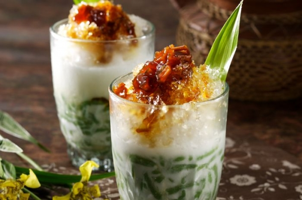

FOODSTAGRAM
MINUMAN
KUDAPAN
KULINER DAERAH
HOME
Resep Hari Ini
Resep Jitu Memasak Rendang Sapi Ala Resto Padang
15/03/2020, 08:00 WIB
Tongseng Kambing
Sate Bali
Soto Lamongan
Lontong Sayur Medan
Menu Paling Favorit
Resep Utama
Nikmatnya Menu Nasi Goreng Seafood Rumahan.
Resep Coto Makassar Yang Tak Kalah Enaknya.
Resep Sop Iga Dengan Kacang Merah.
Minuman

Resep Bajigur Yang Menghangatkan Suasana Malam.
Es Dawet Terlezat.
Resep Selendang Maya Buatan Rumah.
Jajanan Tradisional
Legitnya Kue Bugis Khas Sulawesi.
Jajanan Ibukota Kue Talam.
Onde-Onde Yang Menggugah Selera.
Jelajah Rasa
Kuliner Daerah
Jakarta
Jawa Barat
Jawa Tengah
Jawa Timur
Bali
Sumatera Utara
Sulawesi Utara
Kalimantan Barat
Papua
Dsb
Kuliner Mancanegara
China
Jepang
Korea
Timur Tengah
Italia